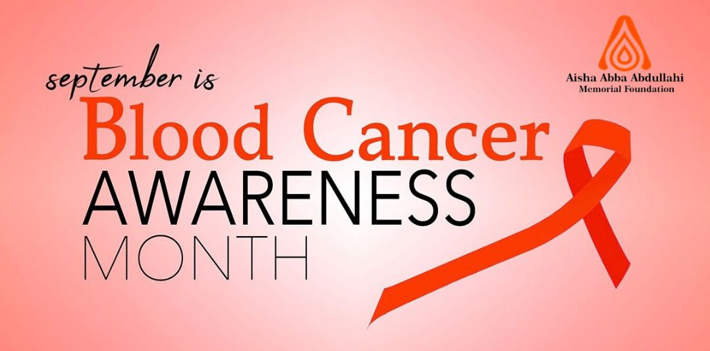
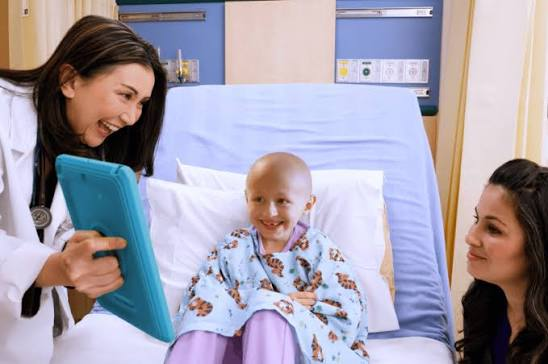
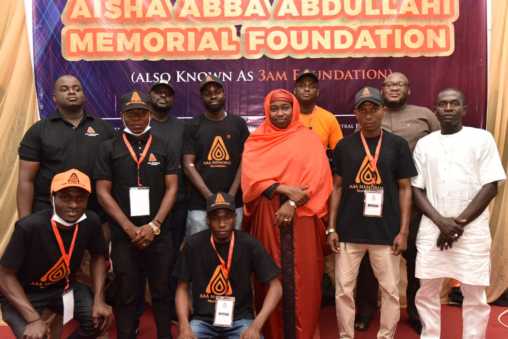

Unusual Bruising
Bruising more easily or frequently than usual without an obvious explanation may deserve medical attention.

This September, let's talk about blood cancer, recognize possible warning signs, encourage early medical attention and stand together for those affected by the disease.
September is a month to increase awareness about blood cancers and the people and families affected by them.
Blood cancer can be frightening, but knowledge gives us something powerful: awareness, attention and the courage to act.
At 3AM Foundation, we believe that awareness should lead to action. That means learning about blood cancer, encouraging people to seek appropriate medical care when something feels wrong, supporting affected families and building a stronger culture of voluntary blood donation.
Sometimes, knowing the right information and sharing it with someone else can be the beginning of hope.
Blood cancer is a general term used for cancers that affect blood-forming tissues, the blood cells or parts of the immune system.
The three major groups commonly discussed are:

These cancers are different from one another, and their symptoms, treatments and outcomes can vary.
Some possible symptoms of blood cancer can look like ordinary illnesses.
Someone may feel unusually tired, experience repeated fever, lose weight or notice unusual bruising. These symptoms can have many causes and do not automatically mean a person has cancer.
However, symptoms that are persistent, unexplained, unusual or getting worse should not simply be ignored.
If something doesn't feel right or continues for longer than expected, talk to a qualified healthcare professional.
Blood cancer does not look the same in everyone. Depending on the type of cancer, a person may experience some of the following:
Bruising more easily or frequently than usual without an obvious explanation may deserve medical attention.
Ongoing tiredness or weakness that does not improve with adequate rest can be a possible warning sign.
Repeated or unexplained fever can occur with some blood cancers.
Losing weight without intentionally changing your diet or activity level should be discussed with a healthcare professional.
Heavy or unusual night sweats without an obvious explanation may need evaluation.
Unexplained breathlessness can occur alongside some blood-related conditions.
Persistent or unexplained bone or joint pain can occur with certain blood cancers.
Unusual paleness may occur when a person has too few healthy red blood cells.
Recurrent or unusually severe infections may require medical evaluation.
Unexplained swelling or lumps, especially around the neck, armpits or groin, can occur with some lymphomas.
Unusual bleeding or difficulty stopping bleeding can sometimes be associated with blood disorders.
A persistent combination of unusual symptoms deserves attention rather than being ignored.
This is extremely important.
Many of the symptoms mentioned above can be caused by infections, nutritional deficiencies, stress, medications and many other medical conditions.
Symptoms alone cannot diagnose blood cancer.
If symptoms are persistent, unexplained, worsening or concerning, speak with a qualified healthcare professional.
There is no single symptom that confirms blood cancer. Diagnosis requires appropriate medical assessment.
Depending on a person's symptoms and medical history, a healthcare professional may recommend blood tests and other investigations.
Searching symptoms online can be useful for learning, but it cannot replace a medical examination.
If something about your health is unusual or persistent, let a healthcare professional investigate it properly.

Blood cancer is not only an adult health issue. Children can also develop blood cancers, including forms of leukemia and lymphoma.
Parents and caregivers should pay attention to persistent or unusual changes in a child's health, including unexplained bruising, prolonged fever, unusual tiredness, frequent infections or persistent bone pain.
When you are concerned about a child's health, seek professional medical advice.
Fact: Fatigue has many possible causes. Persistent or unexplained fatigue should be discussed with a healthcare professional.
Fact: Different blood cancers can affect people of different ages, including children.
Fact: Blood cancers can present differently, and visible symptoms are not always obvious.
Fact: Persistent or concerning symptoms should be medically evaluated rather than ignored.

Awareness is only one part of the fight against blood-related diseases. Support matters too.
People receiving treatment for blood cancers and other serious medical conditions may require blood and blood products during their care.
This is why 3AM Foundation is committed to promoting voluntary blood donation.
We want to help build a culture where donating blood becomes a simple and regular act of community support.
If you are eligible to donate, consider becoming a voluntary blood donor and encourage someone else to do the same.

The Aisha Abba Abdullahi Memorial Foundation (3AM Foundation) believes that every community can become stronger when people are informed, supported and willing to act.
Our commitment is centered on increasing awareness, encouraging blood donation and supporting conversations around blood cancer and life-saving healthcare.
We want to create a community where people understand the importance of blood donation, know when to seek appropriate medical attention and stand with families facing difficult health journeys.
Give hope. Save lives. Build a healthier community.
You may not be able to solve every problem.
But you can learn. You can start a conversation. You can encourage someone to seek medical care. You can donate blood. You can support a family. You can share reliable information.
Sometimes, one simple action can make an extraordinary difference in someone's life.
This September, let's stand together against blood cancer.
Give Blood. Give Hope. Save Lives.
Donate blood, support our work, or help us spread the message.